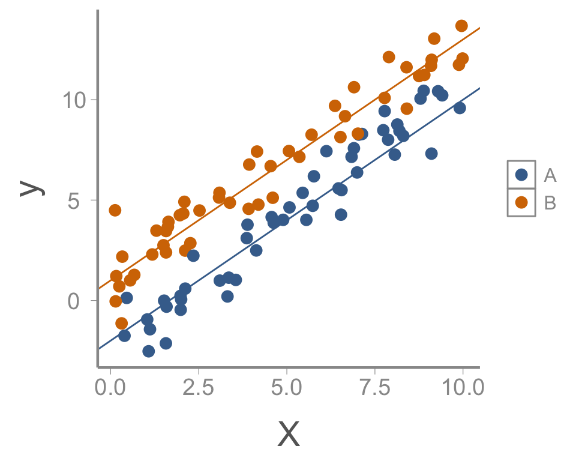
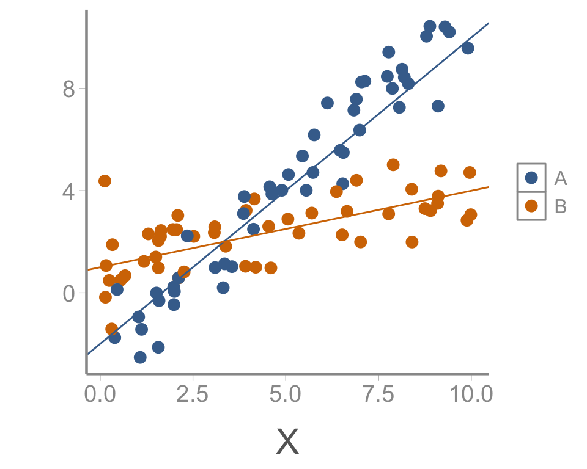
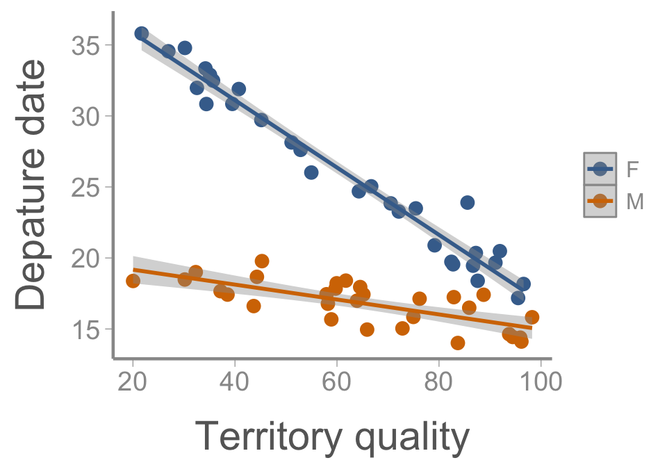
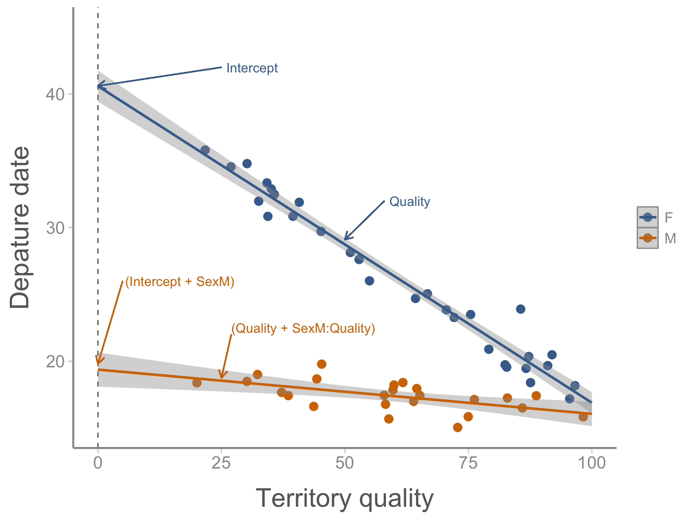
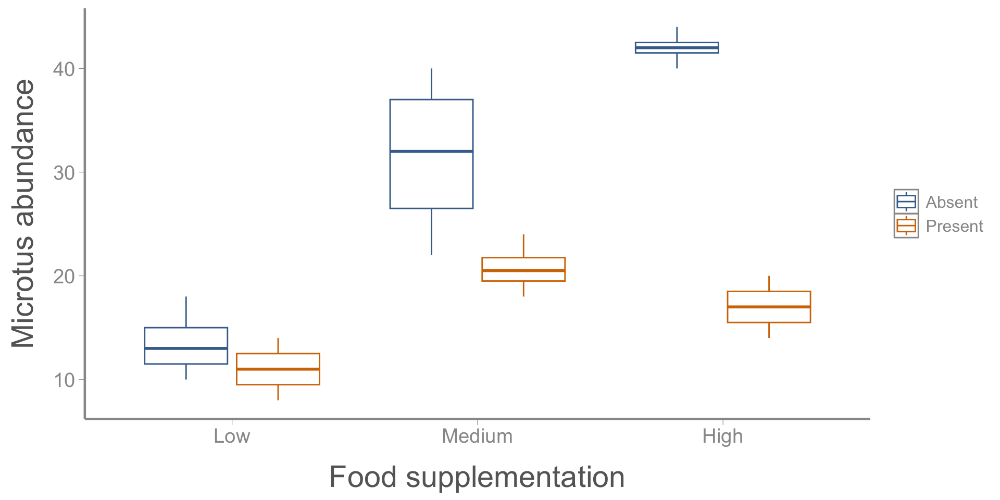
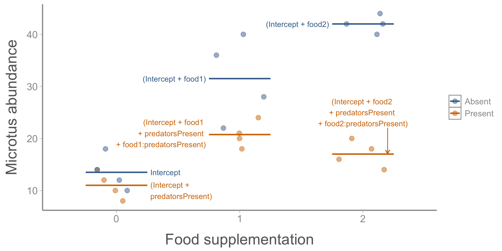
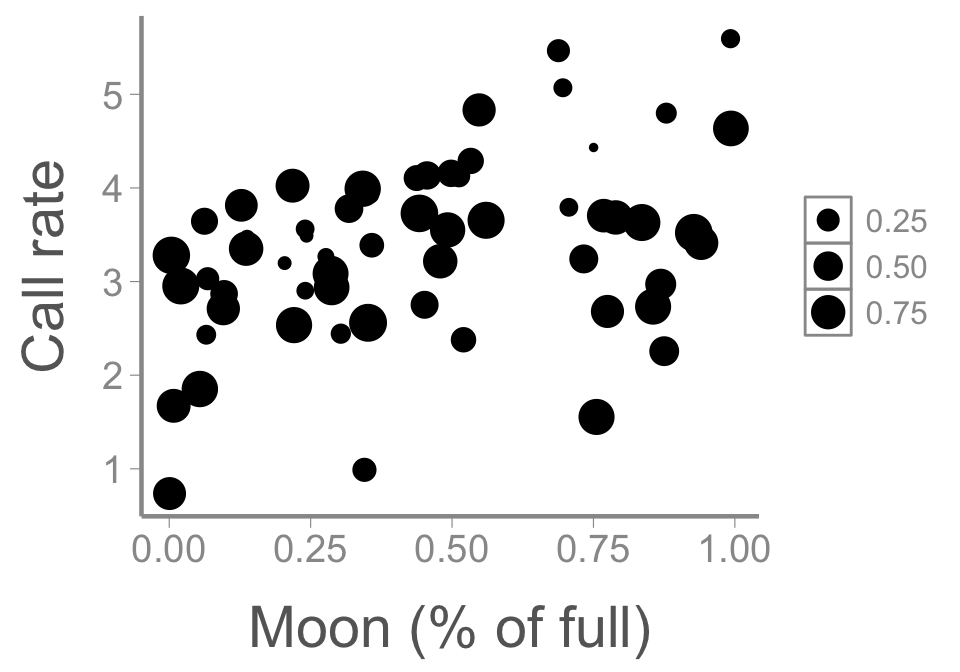
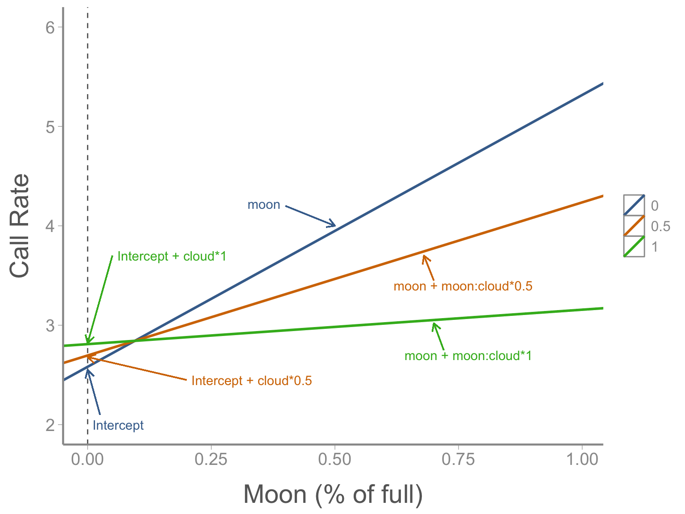

LECTURE 13: mutiple regression, part 2: interactions
FANR 6750
Fall 2026
Outline
1) Interpreting interactions between factor and continuous predictor
2) Interpreting interactions between two factors
3) Interpreting interactions between two continuous predictors
Multiple regression
In the last lecture, we learned about fitting and interpreting multiple regression models of the form:
\[y_i = \beta_0 + \beta_1 \times X1_i + \beta_2 \times X2_i + \epsilon_i\] \[\epsilon_i \sim normal(0, \sigma)\]
In all of the examples, we treated \(X1\) and \(X2\) as independent predictors of the response variables \(y\)
Often, however, we expect — or at least want to test — whether the predictors interact
Interactions imply that the effect of one predictor depends on the value of the other predictors
Interpreting the output of models with interactions is a common source of confusion
Interactions
Visually, interactions are indicated by significant departure from parallelism

Interactions can also be formally tested
Redstart example
American redstarts (Setophaga ruticilla) are migratory birds that spend the winter in the Caribbean and Central America. During the winter, both males and females defend territories, which vary in quality. In early spring, individuals depart the wintering grounds to migrate back to North America.
Researchers in Jamaica used automated telemetry to record the departure time of 30 male and 30 females, with the goal of measuring how territory quality (measured by sampling insect abundance) influences departure timing.


Redstart example
Call:
lm(formula = Departure ~ Sex * Quality, data = departuredata)
Residuals:
Min 1Q Median 3Q Max
-1.817 -0.794 -0.092 0.764 3.596
Coefficients:
Estimate Std. Error t value Pr(>|t|)
(Intercept) 40.59059 0.56625 71.7 <2e-16 ***
SexM -20.36696 0.86332 -23.6 <2e-16 ***
Quality -0.23706 0.00856 -27.7 <2e-16 ***
SexM:Quality 0.18456 0.01279 14.4 <2e-16 ***
---
Signif. codes: 0 '***' 0.001 '**' 0.01 '*' 0.05 '.' 0.1 ' ' 1
Residual standard error: 1.12 on 56 degrees of freedom
Multiple R-squared: 0.97, Adjusted R-squared: 0.968
F-statistic: 599 on 3 and 56 DF, p-value: <2e-16How do we interpret these parameters?
Design matrix
# A tibble: 4 × 5
term estimate std.error statistic p.value
<chr> <dbl> <dbl> <dbl> <dbl>
1 (Intercept) 40.6 0.566 71.7 8.76e-57
2 SexM -20.4 0.863 -23.6 9.02e-31
3 Quality -0.237 0.00856 -27.7 2.24e-34
4 SexM:Quality 0.185 0.0128 14.4 1.64e-20\[\begin{bmatrix} 1 & 1 & 43.68 & 43.68 \\ 1 & 1 & 45.30 & 45.30 \\ 1 & 0 & 26.94 & 0.00 \\ 1 & 0 & 52.86 & 0.00 \end{bmatrix}\;\; \mathbf \times \begin{bmatrix} \color{#D47500}{(Intercept)} \\ \color{#D47500}{SexM} \\ \color{#D47500}{Quality} \\ \color{#D47500}{SexM:Quality} \end{bmatrix}\]
\[\begin{bmatrix} \color{#D47500}{40.6}^*1 + \color{#D47500}{-20.4} ^* 1 + \color{#D47500}{-0.23}^*43.68 + \color{#D47500}{0.18}^*(1 \times 43.68) \\ \color{#D47500}{40.6}^*1 + \color{#D47500}{-20.4} ^* 1 + \color{#D47500}{-0.23}3^*45.30 + \color{#D47500}{0.18}^*(1 \times 45.30) \\ \color{#D47500}{40.6}^*1 + \color{#D47500}{-20.4} ^* 0 + \color{#D47500}{-0.23}^*26.94 + \color{#D47500}{0.18}^*(0 \times 26.94) \\ \color{#D47500}{40.6}^*1 + \color{#D47500}{-20.4}^* 0 + \color{#D47500}{-0.23}^*52.86 + \color{#D47500}{0.18}^*(0 \times 52.86) \end{bmatrix}\]
Interpreting interactions
Expected departure date of individual 4 (female):
\[E[departure_4] = \underbrace{\color{#D47500}{40.6}}_{(Intercept)} + \underbrace{\color{#D47500}{- 0.23}}_{Quality} \times \underbrace{52.86}_{X_4} = 28.4\]
(Intercept)= Expected departure date of female with territory quality = 0Quality= Change in female departure date for every unit change in territory quality
Interpreting interactions
Expected departure date of individual 1 (male):
\[E[departure_1] = \underbrace{\color{#D47500}{40.6}}_{(Intercept)} + \underbrace{\color{#D47500}{-20.4}}_{SexM} + \underbrace{\color{#D47500}{-0.23}}_{Quality} \times 43.68 + \underbrace{\color{#D47500}{0.18}}_{SexM:Quality} \times 43.68 =\]
\[\color{#D47500}{20.2} + \color{#D47500}{(- 0.23 + 0.18)} ^* 43.68 = \color{#D47500}{20.2} + \color{#D47500}{- 0.05} \times 43.68 = 18.0 \]
(Intercept)= Expected departure date of female with territory quality = 0Quality= Change in female departure date for every unit change in territory qualitySexM= Difference in expected departure date of females and males with territory quality = 0Sex:MQuality= Difference in change in departure date of females and males for every unit change in territory quality
Redstart example

Interactions between factors
Often an investigator is interested in the combined effect of two types of treatments
For example, a study might examine the effects of predation and food supplementation on Microtus californicus abundance
We “seed” each enclosure with 10 Microtus and record the number of voles present after a specified period of time.
Microtus californicus

Microtus example

Microtus example
Call:
lm(formula = voles ~ food * predators, data = microtusdata)
Residuals:
Min 1Q Median 3Q Max
-9.50 -2.19 0.00 2.25 8.50
Coefficients:
Estimate Std. Error t value Pr(>|t|)
(Intercept) 13.50 2.03 6.65 3.1e-06 ***
food1 18.00 2.87 6.27 6.5e-06 ***
food2 28.50 2.87 9.93 1.0e-08 ***
predatorsPresent -2.50 2.87 -0.87 0.395
food1:predatorsPresent -8.25 4.06 -2.03 0.057 .
food2:predatorsPresent -22.50 4.06 -5.54 2.9e-05 ***
---
Signif. codes: 0 '***' 0.001 '**' 0.01 '*' 0.05 '.' 0.1 ' ' 1
Residual standard error: 4.06 on 18 degrees of freedom
Multiple R-squared: 0.905, Adjusted R-squared: 0.879
F-statistic: 34.3 on 5 and 18 DF, p-value: 1.34e-08How do we interpret these parameters?
Interpreting interactions
Food = 0, predators absent:
\[E[voles] = \color{#D47500}{13.5} ^* 1 + \color{#D47500}{18.0}^*0 + \color{#D47500}{28.5}^*0 + \color{#D47500}{-2.5}^*0+\color{#D47500}{-8.25}^*0 + \color{#D47500}{-22.5}^*0=13.5\]
Food = 0, predators present:
\[E[voles] = \color{#D47500}{13.5} ^* 1 + \color{#D47500}{18.0}^*0 + \color{#D47500}{28.5}^*0 + \color{#D47500}{-2.5}^*1+\color{#D47500}{-8.25}^*0 + \color{#D47500}{-22.5}^*0=11.0\]
Food = 1, predators absent:
\[E[voles] = \color{#D47500}{13.5} ^* 1 + \color{#D47500}{18.0}^*1 + \color{#D47500}{28.5}^*0 + \color{#D47500}{-2.5}^*0+\color{#D47500}{-8.25}^*0 + \color{#D47500}{-22.5}^*0=31.5\]
Food = 1, predators present:
\[E[voles] = \color{#D47500}{13.5} ^* 1 + \color{#D47500}{18.0}^*1 + \color{#D47500}{28.5}^*0 + \color{#D47500}{-2.5}^*1+\color{#D47500}{-8.25}^*1 + \color{#D47500}{-22.5}^*0=23.25\]
Microtus example

Factorial designs
This design is called a factorial design.
Factorial designs have two (or more) treatments
Because there are 2 levels of predation and 3 levels of food supplementation, this is a \(2 \times 3\) factorial design
The treatment variables are called factors or main effects, and the different treatments within factors are called levels
To test for interactions, there must be replication for each combination of factors. Replication of each combination of factors differs from blocking designs
It helps (though is not strictly necessary) for the replication to be balanced, i.e. the same number of replicates for each combination of factors
More on interactions
If an interaction is significant, then the effect of one factor depends on the other factor
- Always test the highest order interaction first, then lower level interactions, then main effects
Thus, if an interaction is significant, then usually it is ill-advised to further investigate main effects alone (such as with multiple comparison procedures) without taking the other factor into account
The way that you do this is to perform a multiple comparison test for one factor at each level of the other factor, and vice versa
- This is easily performed in
Ras we will see in lab
Interactions between continuous predictors
Finally, we will look at interactions between continuous predictors
Chuck-will’s-widow are nocturnal birds of high conservation concern. To improve the design of monitoring surveys, researchers are interested in how call rate is influenced by moon phase and cloud cover.

Chuck example
Call:
lm(formula = call.rate ~ moon * cloud, data = chuckdata)
Residuals:
Min 1Q Median 3Q Max
-2.365 -0.392 0.158 0.560 1.497
Coefficients:
Estimate Std. Error t value Pr(>|t|)
(Intercept) 2.582 0.405 6.38 3.7e-08 ***
moon 2.734 0.802 3.41 0.0012 **
cloud 0.228 0.642 0.36 0.7238
moon:cloud -2.387 1.230 -1.94 0.0573 .
---
Signif. codes: 0 '***' 0.001 '**' 0.01 '*' 0.05 '.' 0.1 ' ' 1
Residual standard error: 0.833 on 56 degrees of freedom
Multiple R-squared: 0.281, Adjusted R-squared: 0.243
F-statistic: 7.31 on 3 and 56 DF, p-value: 0.000322Interactions between continuous predictors
\[E[y_i] = \color{#D47500}{\beta_0} + \color{#D47500}{\beta_1}^*moon_i + \color{#D47500}{\beta_2}^*cloud_i + \color{#D47500}{\beta_3}^*(moon_i \times cloud_i)\]
\[E[y_i] = \color{#D47500}{\beta_0} + (\color{#D47500}{\beta_1 + \beta_3}^*cloud_i)^*moon_i + \color{#D47500}{\beta_2}^*cloud_i\]
Interactions between continuous predictors
\[E[y_i] = \color{#D47500}{\beta_0} + (\color{#D47500}{\beta_1 + \beta_3}^*cloud_i)^*moon_i + \color{#D47500}{\beta_2}^*cloud_i\]
Cloud = 0
\[\color{#D47500}{\beta_0} + (\color{#D47500}{\beta_1 + \beta_3}^*0)^*moon_i + \color{#D47500}{\beta_2}^*0\]
\(\color{#D47500}{\beta_0}\) (i.e.,
Intercept) = expected call rate when both moon and cloud = 0\(\color{#D47500}{\beta_1}\) (i.e.,
moon) = change in call rate from 0% to 100% moon when cloud = 0
Cloud = 1
\[\color{#D47500}{\beta_0} + (\color{#D47500}{\beta_1 + \beta_3}^*1)^*moon_i + \color{#D47500}{\beta_2}^*1\]
\(\color{#D47500}{\beta_2}\) (i.e.,
cloud)= change in call rate from 0% to 100% cloud cover when moon = 0\(\color{#D47500}{\beta_3}\) (i.e.,
moon:cloud) = change in effect of moon between 0% and 100% cloud cover (or vice versa)
Interactions between continuous predictors

Interpreting interactions
Notice that the interpretation of the “main effects” \(\beta_1\) and \(\beta_2\) changes when there is an interaction in the model:
Main effects measure the effect of one predictor when the other predictor is 0
Because interactions change the meaning of the main effects, you cannot directly compare “main effect” estimates from models with and without interactions
Centering and standardizing predictors
In many cases, a value of 0 for a predictor is not meaningful (e.g., height), in which case centering the predictors can make interpretation of the main effects more intuitive (e.g., change caused by \(X1\) when \(X2\) is at its mean)
If predictors are on very different scales (e.g., cm vs kg), it can also help to standardize the predictors (subtract the mean and divide by the standard deviation)
Additional considerations
Always test the highest order interaction first, then lower level interactions, then main effects
If you include an interaction term, always include the main effects as well regardless of whether they are significant
Although we only looked at two-way interactions, it’s possible to have higher order interactions. However, interpretation gets very difficult (and increasingly meaningless)
As models become more complex, you should generally avoid higher-order interactions unless you specifically hypothesize they may be important
Looking ahead
Next time: Causal inference, part II
Reading: Fieberg chp. 7.2-7.3